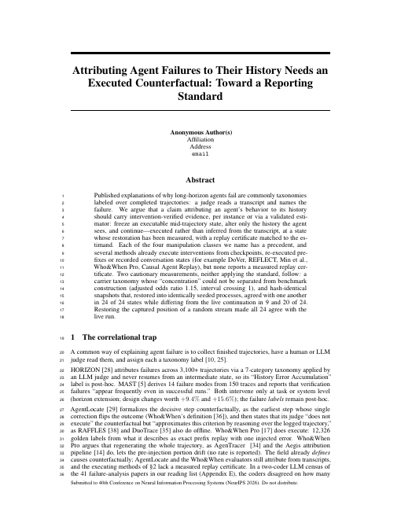
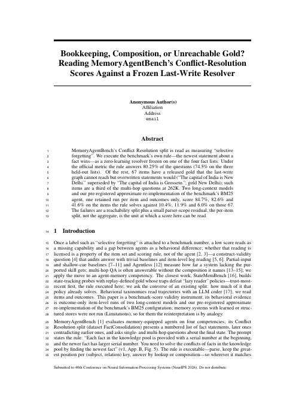
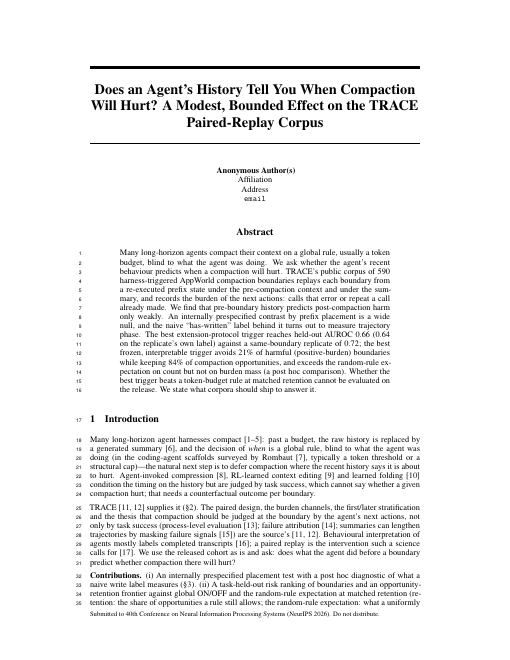

Means
Specialized intelligence
small open models, post-trained per business
We post-train open models into agents that pursue one goal for days. The goal is long-horizon autonomy; specialized intelligence is the means. Three levers, the harness, the environment and the algorithm, build one foundation, measured as success rate over long horizons.
Long-horizon autonomy, reached through specialized intelligence.
agents that pursue one goal for days
small open models, post-trained per business
passk; without a high rate nothing else matters
the same success rate at a fraction of the compute
The horizon grows one unlock at a time: the harness buys a day, cascaded intelligence a week, and specialized intelligence wins the last mile.
Two trends converge. Where they meet, the last mile is reliability over long horizons, won per vertical: many specialized agents, one per business.
Three tracks on one foundation: the harness, the environment, the algorithm. Capability first, then cost.
Buys us the horizon before any training, and one yardstick for every result
Buys us affordable long-horizon training; longer tasks come in reach
Buys us the success rate over the last mile, the primary measure


Base capability is commoditizing and proliferating across many open-weight models.
Enterprise work is long-horizon: many steps, many tools, hours to days.
The gap. Frontier models degrade at long horizons; reliability, not single-shot capability, is missing.
The fix. Each workflow's steps, tools and knowledge, absorbed into the model rather than fetched each step.
The conversion. An open base model becomes a specialist per workflow: cheap, highly reliable, and compounding.
Methods that train open models on long trajectories: less variance in the learning signal, tighter control of environment state. Measured as reliability over long horizons, passk.
The same methods make training and inference cheaper: more learning per rollout, shorter reasoning traces, a harness optimized for long horizons that also says honestly what a prompt alone can reach.
Small open models that pursue one goal for days, on their vertical, at a fraction of frontier cost: the means to long-horizon autonomy.
The agent's inference-time architecture, levels, delegation, compaction, optimized for long horizons; it also sets the honest baseline.
Buys us the horizon before any training, and one yardstick for every result.
Resettable environments that skip the solved prefix and return more learning per rollout, with the algorithm trained inside.
Buys us affordable long-horizon training: the same nodes teach more, longer tasks come in reach.
Critic-based credit assignment and corrected asynchronous training, so that long trajectories teach instead of destabilise.
Buys us the success rate over the last mile, the primary measure.
The agent architecture at inference time, levels, delegation, compaction, optimized for long horizons; also the honest baseline.

A hierarchy of levels by time scale lets an agent pursue one goal for days with a human attending once a day. The harness the program builds on.

One live state, folded from the trace, serves the agent and its observer over a long run.

Attributing a long-horizon failure to its history needs an executed counterfactual, not a transcript label.

What a memory benchmark's conflict-resolution score measures, read against a frozen last-write rule.

A pre-registered negative result: recent history predicts compaction harm only weakly.
Resettable environments with the algorithm trained inside, so each rollout returns more learning; a memory benchmark anchors evaluation.
State-reset environments that skip the solved prefix, so every rollout is cheaper and more informative.
The shared benchmark all three levers measure against.
Critic-based RL that cuts variance so long trajectories teach; a from-scratch reproduction of a published method is the baseline.

Gates each policy-gradient term by advantage times surprisal, so exploration survives and gradient flows to unsolved problems. The variance lever at the level of the gradient.